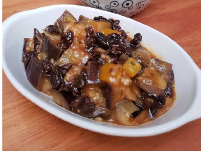

Beringela Agridoce
Ingredientes
Beringela
Obs:Se desejar, pode fazer com beringela reforada. Para isso, corte a beringela e refogue na manteiga até que fique macia
Obs:Se desejar, pode fazer com beringela reforada. Para isso, corte a beringela e refogue na manteiga até que fique macia